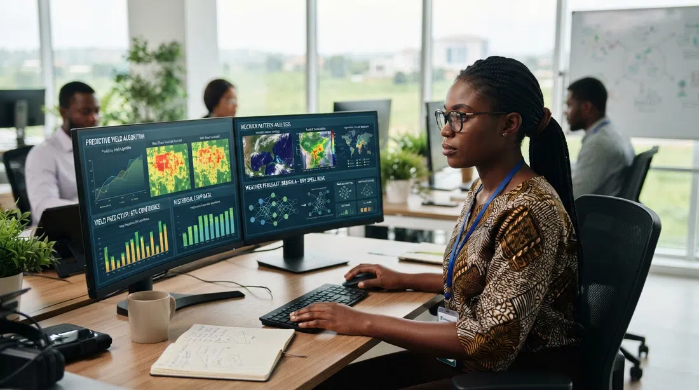
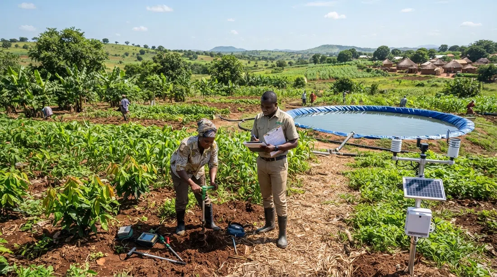

01
01Formation et certification
Développer les compétences en données, intelligence artificielle et statistiques appliquées à l’agriculture.

AGROPULSE GLOBAL SOLUTIONS
Des compétences en formation, données, climat, innovation et conseil stratégique pour les filières agricoles.
NOS DOMAINES D’INTERVENTION
01Développer les compétences en données, intelligence artificielle et statistiques appliquées à l’agriculture.
 02
02Structurer les données agricoles et concevoir les applications, plateformes et règles nécessaires à leur gestion.
Transformer les données en prévisions, tableaux de bord et outils d’aide à la décision.

04Accompagner la mesure des impacts, la traçabilité, l’adaptation climatique et les démarches de financement vert.
 05
05Accompagner les porteurs de projets et startups agricoles du modèle économique au développement de leur activité.
06Éclairer les orientations des organisations par des diagnostics, études et évaluations de programmes.
07Mettre des professionnels qualifiés à disposition des organisations et accompagner leurs opérations numériques.
 08
08Accompagner le choix, l’utilisation durable, la maintenance et le financement des équipements agricoles.